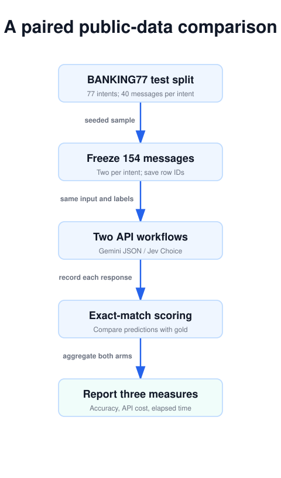
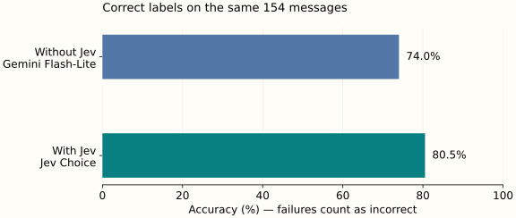
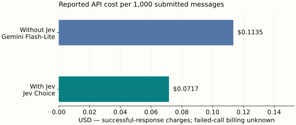
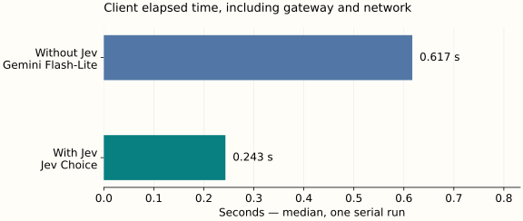

Jev by TypeSafe AI · Part 4 of 4
Does Jev Actually Save Money? A Public-Data Test Against Gemini Flash-Lite
154 public banking messages. Two practical classifiers. Measured accuracy, API charges, and response times—with the raw results included.
The answer: compare the job, then the bill
Imagine a banking support inbox. A customer asks about a missing card, a declined transfer, or a cash withdrawal. Before anyone writes a reply, software needs to choose the right queue. That is a small decision with a clear output: one intent label. It is also the kind of job that can quietly turn into thousands of paid model calls.
For this article, we ran a paired comparison on public banking messages. The existing path asks Gemini 2.5 Flash-Lite for a structured label. The replacement asks Jev a Choice question. Both receive the same message and the same 77 available intents. Neither writes an explanation, triggers a payment, or sends a customer response.
On this 154-message sample, Jev returned the correct label for 124 messages (80.5%); Gemini did so for 114 (74.0%). Reported response charges were $0.011034 and $0.017479, respectively. Those are observed charges from this run, with one important billing limitation: failed requests without usage data cannot be assigned a known cost.
This is a small, reproducible routing experiment, conducted September 25, 2026. It is not a production banking deployment or a universal model leaderboard. Its value is that the task, sample, requests, predictions, and calculations are all inspectable. The result can support a next experiment without pretending to settle every deployment decision.
Same task, two implementations
Without Jev
- Public customer message
- Gemini + intent descriptions
- JSON schema constrains the label
- Application parses and scores it
With Jev
- The identical customer message
- Jev state + Choice criteria
- Typed intent answer
- Application reads and scores it
1. Use a real task with public answers
The dataset is PolyAI’s BANKING77, which contains banking customer-service queries labeled by intent. We use its test split: 3,080 messages across 77 categories. This is a useful challenge because categories can be close together. A pending transfer, a failed transfer, and a transfer that has not arrived can require different labels even when the customer uses similar words.
We select two messages from each category using a fixed random seed, then shuffle the combined sample. That produces 154 messages with equal category representation. It gives uncommon categories the same weight as common ones in this experiment. It does not reproduce the traffic distribution of an actual bank, where a few queues may dominate volume.
The source revision and file checksum are recorded in the manifest. The seed is 20260925, and the sample contains the original zero-based CSV row numbers. Anyone with the same input file and script can reconstruct the sample. The dataset is shared under CC BY 4.0; the accompanying package preserves attribution.
We do not train on the training split, supply labeled demonstrations, or change questions after seeing the evaluation outcomes. This is a zero-shot comparison using category names converted into short descriptions. Public test data may have appeared in either model’s training material, so an unseen private evaluation would still be needed before making strong claims about generalization.

2. Give the baseline a fair, inexpensive configuration
A cost comparison becomes unhelpful if the baseline is forced to write paragraphs while Jev only selects a label. Here, Gemini returns a JSON object containing one intent. The schema enumerates all allowed labels. Temperature is zero, reasoning is explicitly disabled, and the completion limit is 64 tokens. This is a compact classifier, not a deliberately expensive assistant.
Jev receives the message as state and the same classification instruction as a Choice question. Its criteria map each intent identifier to the identifier with underscores replaced by spaces. Gemini receives that same mapping in its system prompt. The APIs package the task differently, and Gemini’s output schema repeats the label list. We compare these practical native implementations rather than claiming identical serialized input tokens.
The requested model IDs are typesafe/jev-1.13 and google/gemini-2.5-flash-lite. Both are called through OpenRouter with the same local Python HTTP client. Jev uses the Decisions API; Gemini uses chat completions with structured outputs. The saved responses retain returned model and provider fields.
Requests run serially. For the first message, Jev goes first; for the second, Gemini goes first; the order keeps alternating. This reduces a simple ordering bias while avoiding a concurrent load test. There are no application retries. An early service error paused the script; the continuation skipped already attempted requests, retained the failed result, and completed the remaining sample. It did not silently rerun a difficult case.
A separate two-option connectivity probe preceded the benchmark and is saved separately. It verified access without using a benchmark answer to tune the task. Its charge is excluded from the comparison. The measured run itself consists of exactly one attempt per model per message: 308 attempts in total.
3. Start with accuracy, including failures
Exact-match accuracy asks whether the returned intent equals the dataset’s label. Every sampled message stays in the denominator. An API failure or unusable output counts as incorrect for this end-to-end routing measure, because the application did not receive the correct usable label. There is no abstention policy that could make accuracy look better by quietly reducing coverage.

| Measure | Without Jev: Gemini | With Jev: Jev |
|---|---|---|
| Correct / submitted | 114 / 154 | 124 / 154 |
| Exact-match accuracy | 74.0% | 80.5% |
| Request / output failures | 0 | 1 |
| Accuracy among usable responses | 74.0% | 81.0% |
The paired outcomes are especially useful. Both models were correct on 111 messages. Jev alone was correct on 13; Gemini alone was correct on 3. Both missed the correct usable outcome on 27. Those disagreements are better investigation material than an isolated headline percentage: they show where changing the classifier changes the route.
Only two examples represent each intent, so this run cannot establish reliable accuracy for an individual queue. Nor should a small aggregate gap be promoted into a general ranking. A two-sided exact McNemar comparison of the discordant pairs gives p = 0.021; it is a descriptive check on this sample, not a substitute for a larger, representative evaluation. The script and raw predictions are more useful than unwarranted precision.
4. Compare actual API charges, then normalize
The cost calculation sums the usage.cost value returned by successful requests. It does not multiply guessed token counts by a headline price. That matters because the request wrappers differ and provider billing can include details that a rough prompt-length estimate misses.

| Measure | Gemini | Jev |
|---|---|---|
| Reported charges in this run | $0.017479 | $0.011034 |
| Attempts without reported cost | 0 | 1 |
| Reported cost / 1,000 submitted | $0.1135 | $0.0717 |
| Mean cost / usable response | $0.00011350 | $0.00007212 |
| Input / output tokens, usable responses | 165,293 / 2,373 | 262,717 / 126,726 |
Jev’s recorded total is 36.9% lower. Treat that as a comparison of reported response charges, not a fully reconciled invoice: the failed-call billing is unknown. Comparing the mean charge per usable response avoids treating a failed request as a free success. Neither calculation includes credit-purchase fees, taxes, local compute, engineering time, or the cost of fixing a wrong route.
For context, the checked Jev listing prices input at $0.042 per million tokens with free output. The Gemini listing shows $0.10 input and $0.40 output per million tokens. These prices explain the direction of the difference; the saved usage fields establish what this workload actually reported. The Gemini listing also announces retirement on October 20, 2026, so future reruns must check availability and name any replacement.
Scaling the per-message figures to a million submissions is arithmetic, not a throughput experiment. A larger system may reuse descriptions, hit caches, change provider routing, or need retries. Publish the normalization alongside its denominator so readers can adapt it without mistaking it for a measured monthly bill.
5. Time the full request, and keep the slow case
We measure elapsed time using a monotonic clock around the HTTP request and response read. That includes connection setup, network transit, OpenRouter routing, provider work, and response transfer. It is a useful application-facing measurement, but it is not pure model inference time. The client does not explicitly reuse a persistent connection pool.

| Statistic | Gemini | Jev |
|---|---|---|
| Median | 0.617 | 0.243 |
| 95th percentile | 1.058 | 0.359 |
| Maximum | 1.413 | 40.150 |
The maximum matters here. One Jev request returned an HTTP 520 error after roughly 40 seconds. Hiding it would make the experience look smoother than it was. At the same time, one failure in a short run is not enough evidence to estimate a provider’s long-term reliability. We record the incident and leave it in the outcome counts.
For a live queue, repeat timing at the expected concurrency and from the intended deployment region. Add your actual timeout, retry, and fallback policy before measuring completed work. A fast typical answer does not prevent a stalled request, and a fallback that restores service adds both time and cost. This experiment establishes a baseline for those tests rather than replacing them.
6. Inspect the messages where the models disagree
A wrong label is not an abstract loss when it changes which team receives a customer’s question. Inspect the original message, the gold label, and both predictions together. Start with disagreements, then sample cases where both models were wrong. Some mistakes may reveal unclear category boundaries; others may indicate that the short category descriptions are inadequate.
The walkthrough below reads the saved benchmark results locally in the page. It makes no API requests. Its message text comes from the public dataset, and its predictions come from the actual recorded responses. Use the filter to inspect disagreements without losing access to the full set. The downloadable CSV remains usable when JavaScript is disabled.
Walk through a recorded case
Case 1 of 154
- CSV row
- 533
- Gold intent
- pin_blocked
- Jev
- pin_blocked
- Gemini
- pin_blocked
Do not rewrite the question against these cases and keep presenting the same score as held-out evidence. Once a mistake informs a change, that case has become development material. Reserve new data for the next evaluation, record the revised prompt, and compare both implementations again. Improvements should survive fresh messages rather than just repairing the examples already on the page.
7. Decide whether the savings survive the workflow
The model bill is only one part of a support-routing system. A wrong queue can create a reassignment, an extra wait, and another human touch. The benchmark measures agreement with intent labels; it does not measure handling time, customer satisfaction, or the business consequences of a particular error. Those outcomes need operational evidence.
Use the observed cost difference as a budget, not as a promise of business value. If the replacement reduces API spending but increases manual corrections, the net result can reverse quickly. Conversely, a quality improvement may be worth more than token savings. Put both effects into the same unit, such as dollars per thousand completed tickets, before choosing a rollout policy.
net_savings = (
baseline_api_cost - replacement_api_cost
+ baseline_correction_cost - replacement_correction_cost
- added_infrastructure_cost
)This formula is a planning model, not an additional measured result. Estimate correction costs from sampled work logs, and keep fixed implementation costs separate from recurring costs. A cheap classifier used only a few hundred times a month may never repay a complicated migration. A simple change at high volume may be easier to justify.
Jev also returns probabilities, but this study does not use them to reject uncertain cases. Adding that policy changes the experiment: now you must report automatic coverage, error rate among accepted messages, and the cost of handling everything else. Tune the threshold on validation data, as described in Part 3, then evaluate the complete policy on new cases.
8. Reproduce the result before expanding the rollout
The accompanying benchmark package contains the source script, dataset manifest, complete response records, a flat comparison CSV, computed summary, and chart-generation code. You can recompute the summary without credentials or paid calls. The full records preserve failures as well as successful answers, and contain no API key or authorization headers.
For a live rerun, use a fresh directory, supply an OpenRouter key through the environment, and run the prepared sample. That sends the selected public messages to the two providers and incurs API charges. The script has a post-call stop at $0.50 of reported charges; it is not a hard account spending cap, and requests without usage data cannot be covered by that accounting. Set an account-level budget if you need a strict ceiling.
# Offline: recompute summary from saved responses
python3 benchmark.py
# Optional: rebuild CSV and charts (requires matplotlib)
python3 analysis.py
# Live rerun: in a fresh directory with benchmark.py
# Set OPENROUTER_API_KEY securely in your environment first.
python3 benchmark.py --prepare
python3 benchmark.py --liveThe live command resumes existing logs by skipping attempted model-message pairs; it does not overwrite the published run or retry its failures. Copy only the scripts into a new directory for a genuinely new experiment. Keep that run’s manifest, timestamps, and summary together so different model versions and service conditions remain distinguishable.
The next useful step is a larger shadow evaluation on representative messages from your own queue, with permission to process them and human-reviewed labels. Keep the existing workflow responsible for customer-facing actions while measuring the alternative. Decide in advance which accuracy, latency, and total-cost results would justify switching. This public-data experiment provides a concrete starting point—and a method for testing whether its advantage survives your real workload.